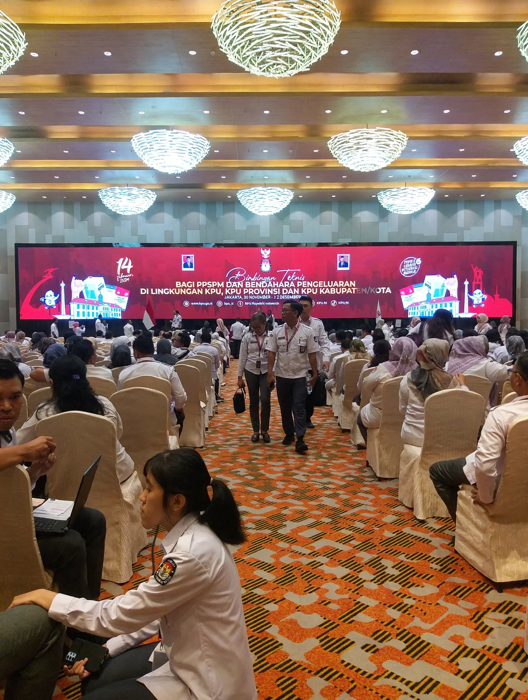

KPU
2023

A project-specific image from the KPU 2023 portfolio archive.
The image supports the production-focused presentation of the documented role.
Published in the context of the KPU 2023 case, without extending beyond the documented role.
From setup
to showtime.
KPU 2023 is one of the clearest examples of Sobri Mustofa’s hands-on production profile: camera, directing and technical/event coordination in one workflow.
The scope documented for this project includes camera setup, camera operation, photography, screen, audio, artist coordination and Program Director responsibilities.
Multi-layer production responsibility
Camera setup and camera operation, plus photography support.
Screen, audio, artist coordination and Program Director responsibilities.
Hands-on across the production chain.
My documented contribution spans camera setup, camera operation, photography, screen, audio, artist coordination and Program Director responsibilities. The value of the role is the ability to connect technical and program decisions inside one live-production workflow.
Documented scope.
The project scope covers camera setup, camera operation, photography, screen, audio, artist coordination and Program Director responsibilities.
The production scope is clear.
The project record defines the production scope presented here; audience, performance, budget and business outcomes are outside the current case record.